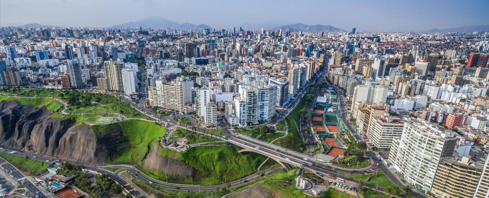

South America is a continent in the Western Hemisphere, mostly in the Southern Hemisphere, with a relatively small portion in the Northern Hemisphere. It may also be considered a subcontinent of the Americas, which is how it is viewed in the Spanish and Portuguese-speaking regions of the Americas. In temperate latitudes, winters are milder and summers warmer than in North America. Because its most extensive part of the continent is in the equatorial zone, the region has more areas of equatorial plains than any other region.
Brasília is the federal capital of Brazil and seat of government of the Federal District. The city is located atop the Brazilian highlands in the country's center-western region. It was founded on April 21, 1960, to serve as the new national capital. Brasília is estimated to be Brazil's third-most populous city.Brasília has a tropical savanna climate, milder due to the elevation and with two distinct seasons: the rainy season, from October to April, and a dry season, from May to September.
Buenos Aires is the capital and largest city of Argentina. The city is located on the western shore of the estuary of the Río de la Plata, on the South American continent's southeastern coast. "Buenos Aires" can be translated as "fair winds" or "good airs", but the former was the meaning intended by the founders in the 16th century, by the use of the original name "Real de Nuestra Señora Santa María del Buen Ayre", named after the Madonna of Bonaria in Sardinia.
Lima is the capital and the largest city of Peru. It is located in the valleys of the Chillón, Rímac and Lurín rivers, in the central coastal part of the country, overlooking the Pacific Ocean. Together with the seaport of Callao, it forms a contiguous urban area known as the Lima Metropolitan Area. With a population of more than 9 million, Lima is the most populous metropolitan area of Peru and the third-largest city in the Americas (as defined by "city proper"), behind São Paulo and Mexico City.
